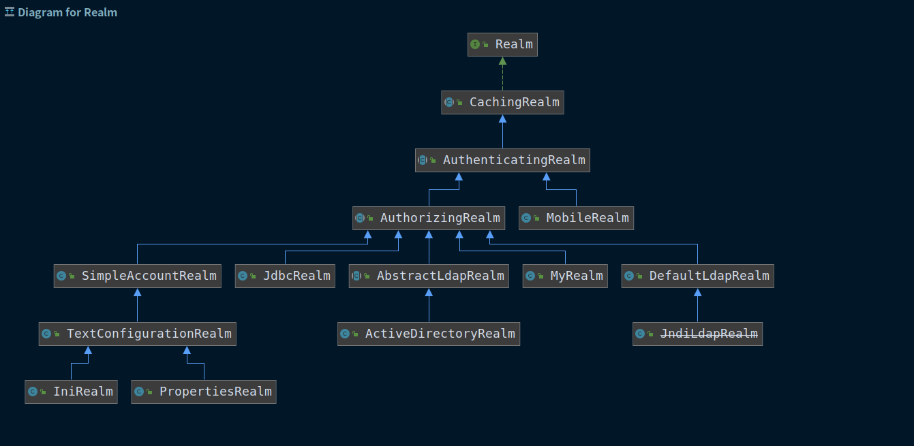

shiro授权框架，个人理解主要适合单体应用，分布式应用和微服务架构模式下需要改造重新实现一些功能才能使用。
基础环境
- maven依赖
1
2
3
4
5
6
7
8
9
| <dependency>
<groupId>org.apache.shiro</groupId>
<artifactId>shiro-spring-boot-starter</artifactId>
</dependency>
<dependency>
<groupId>log4j</groupId>
<artifactId>log4j</artifactId>
</dependency>
|
- 基本配置类
1
2
3
4
5
6
7
8
9
10
11
12
13
14
15
16
17
18
19
20
21
22
23
24
25
26
27
28
29
30
31
32
33
34
35
36
37
38
39
40
41
42
43
44
45
46
47
48
49
50
51
52
53
54
55
56
57
58
59
60
61
62
63
64
65
66
67
68
69
70
71
72
73
74
75
76
77
78
79
80
81
82
83
84
85
86
87
88
89
90
91
92
93
94
95
96
97
98
99
100
101
102
103
104
105
106
107
108
109
110
111
112
113
114
115
116
117
118
| import org.apache.shiro.authc.credential.HashedCredentialsMatcher;
import org.apache.shiro.authc.pam.AtLeastOneSuccessfulStrategy;
import org.apache.shiro.authc.pam.ModularRealmAuthenticator;
import org.apache.shiro.cache.MemoryConstrainedCacheManager;
import org.apache.shiro.realm.AuthenticatingRealm;
import org.apache.shiro.realm.AuthorizingRealm;
import org.apache.shiro.spring.web.ShiroFilterFactoryBean;
import org.apache.shiro.web.mgt.CookieRememberMeManager;
import org.apache.shiro.web.mgt.DefaultWebSecurityManager;
import org.apache.shiro.web.servlet.Cookie;
import org.apache.shiro.web.servlet.SimpleCookie;
import org.springframework.context.annotation.Bean;
import org.springframework.context.annotation.Configuration;
import java.util.Arrays;
import java.util.HashMap;
import java.util.Map;
@Configuration
public class shiroConfig {
@Bean
public DefaultWebSecurityManager mySecurityManager(AuthorizingRealm myRealm, AuthenticatingRealm mobileRealm) {
DefaultWebSecurityManager securityManager = new DefaultWebSecurityManager();
HashedCredentialsMatcher matcher = new HashedCredentialsMatcher();
matcher.setHashAlgorithmName("MD5");
matcher.setHashIterations(3);
myRealm.setCredentialsMatcher(matcher);
mobileRealm.setCredentialsMatcher(matcher);
securityManager.setRealms(Arrays.asList(myRealm, mobileRealm));
ModularRealmAuthenticator authenticator = new ModularRealmAuthenticator();
authenticator.setAuthenticationStrategy(new AtLeastOneSuccessfulStrategy());
authenticator.setRealms(Arrays.asList(myRealm, mobileRealm));
securityManager.setAuthenticator(authenticator);
CookieRememberMeManager cookieRememberMeManager = new CookieRememberMeManager();
Cookie cookie = new SimpleCookie("rememberMe");
cookie.setHttpOnly(true);
cookie.setMaxAge(5);
cookieRememberMeManager.setCookie(cookie);
securityManager.setRememberMeManager(cookieRememberMeManager);
MemoryConstrainedCacheManager memoryConstrainedCacheManager = new MemoryConstrainedCacheManager();
securityManager.setCacheManager(memoryConstrainedCacheManager);
return securityManager;
}
@Bean
public ShiroFilterFactoryBean getShiroFilterFactoryBean(DefaultWebSecurityManager mySecurityManager){
ShiroFilterFactoryBean factoryBean = new ShiroFilterFactoryBean();
factoryBean.setSecurityManager(mySecurityManager);
Map<String, String> fifterMap = new HashMap<>();
fifterMap.put("/salary/**", "authc, perms[salary]");
fifterMap.put("/common/logout", "logout");
factoryBean.setLoginUrl("/index.html");
factoryBean.setUnauthorizedUrl("/common/unAuth");
factoryBean.setFilterChainDefinitionMap(fifterMap);
return factoryBean;
}
}
|
实现登录验证功能
- 创建Realm对象，继承
AuthorizingRealm
- 实现父类的方法
- 授权方法
doGetAuthorizationInfo
- 认证方法
doGetAuthenticationInfo
1
2
3
4
5
6
7
8
9
10
11
12
13
14
15
16
17
18
19
20
21
22
23
24
25
26
27
28
29
30
31
32
33
34
35
36
37
38
39
40
41
42
43
44
45
46
47
48
49
50
51
52
53
54
55
56
57
58
59
60
61
62
63
64
65
|
import com.sunfy.shiroWeb.bean.UserBean;
import com.sunfy.shiroWeb.service.UserService;
import org.apache.shiro.authc.*;
import org.apache.shiro.authz.AuthorizationInfo;
import org.apache.shiro.authz.SimpleAuthorizationInfo;
import org.apache.shiro.realm.AuthorizingRealm;
import org.apache.shiro.subject.PrincipalCollection;
import org.apache.shiro.util.ByteSource;
import org.slf4j.Logger;
import org.slf4j.LoggerFactory;
import org.springframework.beans.factory.annotation.Autowired;
import org.springframework.context.annotation.Configuration;
@Configuration
public class MyRealm extends AuthorizingRealm {
@Autowired
private UserService userService;
private Logger logger = LoggerFactory.getLogger(MyRealm.class);
@Override
protected AuthorizationInfo doGetAuthorizationInfo(PrincipalCollection principalCollection) {
logger.info(">>>entered MyRealm doGetAuthorizationInfo method");
SimpleAuthorizationInfo simpleAuthorizationInfo = new SimpleAuthorizationInfo();
UserBean userBean = (UserBean) principalCollection.asList().get(0);
simpleAuthorizationInfo.addRoles(userBean.getUserRoles());
simpleAuthorizationInfo.addStringPermissions(userBean.getUserPerms());
return simpleAuthorizationInfo;
}
@Override
protected AuthenticationInfo doGetAuthenticationInfo(AuthenticationToken authenticationToken) throws AuthenticationException {
logger.info("<<<entered MyRealm doGetAuthenticationInfo method");
UsernamePasswordToken userToken = (UsernamePasswordToken) authenticationToken;
String userName = userToken.getUsername();
UserBean userBean = userService.queryUserByName(userName);
if (userBean == null) {
return null;
}
ByteSource salt = ByteSource.Util.bytes("salt");
SimpleAuthenticationInfo simpleAuthenticationInfo =
new SimpleAuthenticationInfo(userBean, userBean.getUserPass(),salt,"myRealm");
return simpleAuthenticationInfo;
}
}
|
认证错误访问情况设置
设置登录页、登录成功也、未授权页面
1
2
3
4
|
factoryBean.setLoginUrl("/index.html");
factoryBean.setUnauthorizedUrl("/common/unAuth");
|
登出
1
2
|
fifterMap.put("/common/logout", "logout");
|
授权功能
控制主页上按钮的访问权限
currentUser.getPricipal() 来自 MyRealm中doGetAuthenticationInfo认证返回的simpleAuthenticationInfo对象的第一个属性
控制后台资源路径的访问权限
方法1：硬编码的方法，自行判断权限。
1
2
3
4
5
6
7
8
| @RequestMapping("query")
public String query(){
Subject subject = SecurityUtils.getSubject();
if (subject.isPermitted("mobile")) {
return "mobile";
}
return "error";
}
|
方法2：使用shiro提供的perms过滤器，集中配置权限信息
1
2
| fifterMap.put("/mobile/**", "authc, perms[mobile]");
fifterMap.put("/salary/**", "authc, perms[salary]");
|
错误补充机制：没有权限就会进入到ShiroFilterFactoryBean中配置的UnauthorizedUrl
方法3：使用shiro提供的注解，实现方法级别的权限控制。
1
2
3
4
5
| @RequiresAuthentication 需要完成用户登录
@RequiresGuest 未登录用户可以访问，登录用户不可访问
@RequiresPermissions 需要有对应资源权限
@RequiresRoles 需要有对应的角色
@RequiresUser 需要完成用户登录并且实现了记住我功能
|
错误补充机制：没有权限会抛出异常（500错误）
如果基本框架使用的是Spring Boot可以捕获异常处理：
1
2
3
4
5
6
7
8
9
10
11
12
13
14
15
| import org.apache.shiro.authz.AuthorizationException;
import org.springframework.web.bind.annotation.ExceptionHandler;
import org.springframework.web.bind.annotation.RestControllerAdvice;
@RestControllerAdvice
public class MyExceptionHandler {
@ExceptionHandler(AuthorizationException.class)
public Object unAuth(){
return "没有资源访问权限";
}
}
|
密码加密
shiro会获得一个CredentialsMatcher对象，来进行密码比对。
如果想使用MD 5加密，可以使用HashedCredentialsMatcher，Md5CredentialsMatcher已经过期
1
2
3
4
5
6
7
8
9
10
11
|
HashedCredentialsMatcher matcher = new HashedCredentialsMatcher();
matcher.setHashAlgorithmName("MD5");
matcher.setHashIterations(3);
myRealm.setCredentialsMatcher(matcher);
|
数据库数据加密方法
1
2
3
4
5
6
7
8
9
10
11
12
13
14
15
16
| import org.apache.shiro.crypto.hash.SimpleHash;
import org.apache.shiro.util.ByteSource;
public class PasswordEncoder {
public static String encoder(String password) {
SimpleHash simpleHash = new SimpleHash("MD5", ByteSource.Util.bytes(password), ByteSource.Util.bytes("salt"), 3);
return simpleHash.toString();
}
public static void main(String[] args) {
System.out.println(encoder("manager"));
}
}
|
多Realm认证
可用于实现用户名和手机号都可以登录。
1
2
3
4
5
6
7
8
9
10
| org.apache.shiro.authz.ModularRealmAuthorizer
protected AuthenticationInfo doAuthenticate(AuthenticationToken authenticationToken) throws AuthenticationException {
assertRealmsConfigured();
Collection<Realm> realms = getRealms();
if (realms.size() == 1) {
return doSingleRealmAuthentication(realms.iterator().next(), authenticationToken);
} else {
return doMultiRealmAuthentication(realms, authenticationToken);
}
}
|
实现多个Realm完成不同的认证功能，通过增加一个Realm，事项按照手机号也可以登录的功能
注意可以设置不同的认证策略：
1
2
3
4
5
6
7
8
9
10
11
12
|
ModularRealmAuthenticator authenticator = new ModularRealmAuthenticator();
authenticator.setAuthenticationStrategy(new AtLeastOneSuccessfulStrategy());
authenticator.setAuthenticationStrategy(new AllSuccessfulStrategy());
authenticator.setAuthenticationStrategy(new FirstSuccessfulStrategy());
authenticator.setRealms(Arrays.asList(myRealm, mobileRealm));
securityManager.setAuthenticator(authenticator);
|
记住我功能
1
2
|
token.setRememberMe(true);
|
记住我功能对应了默认的user过滤器。
怎么设置记住我时常，以及记住我功能记录保存位置
1
2
3
4
5
6
| CookieRememberMeManager cookieRememberMeManager = new CookieRememberMeManager();
Cookie cookie = new SimpleCookie("rememberMe");
cookie.setHttpOnly(true);
cookie.setMaxAge(5);
cookieRememberMeManager.setCookie(cookie);
securityManager.setRememberMeManager(cookieRememberMeManager);
|
会话管理
1
| securityManager.setSessionManager();
|
认证缓存
1
2
| MemoryConstrainedCacheManager memoryConstrainedCacheManager = new MemoryConstrainedCacheManager();
securityManager.setCacheManager(memoryConstrainedCacheManager);
|
备注：记住我、会话管理以及认证缓存，都可以通过扩展对应的manager接口的方式，实现自己的灵活扩展，比如将对应的数据信心存储在redis中。
Realm类型关系图


Copyright 2021 sunfy.top ALL Rights Reserved